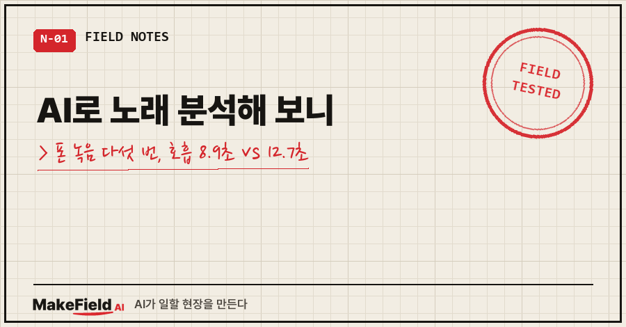
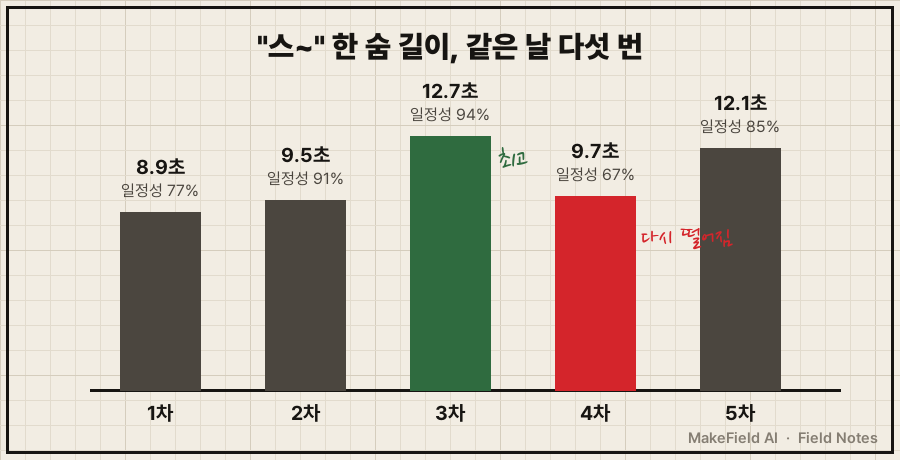
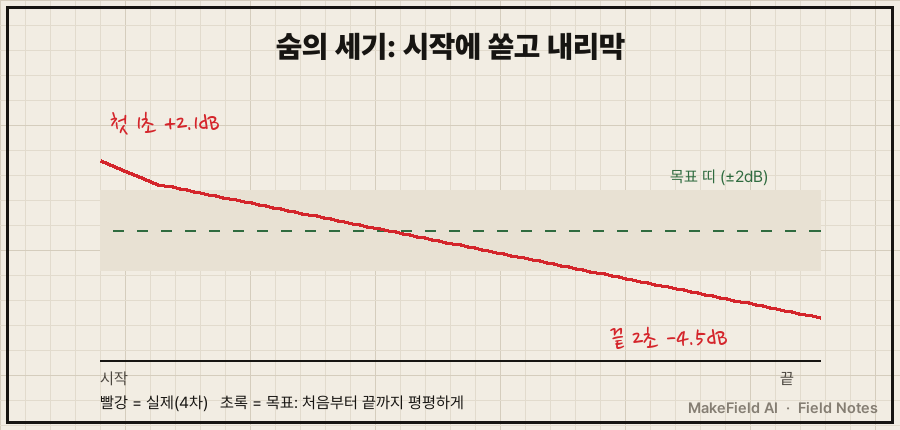
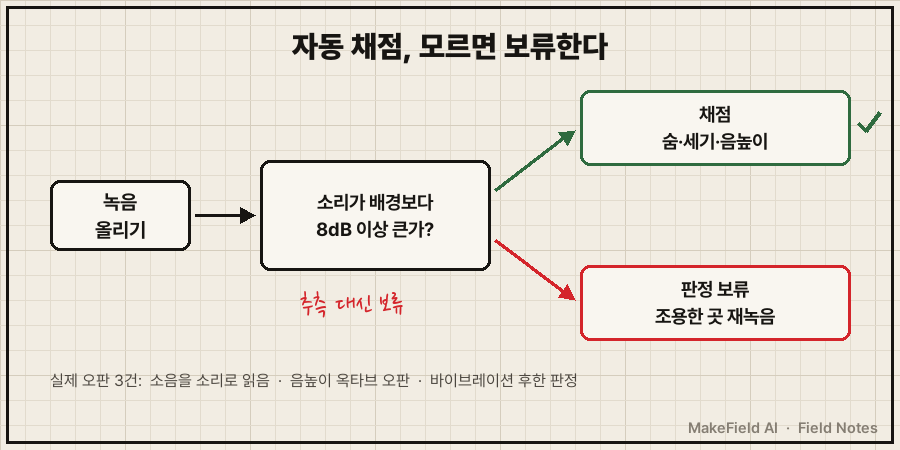

AI로 노래 분석을 해 보니, 제 목소리에서 먼저 보인 건 음정이 아니라 숨을 쓰는 버릇이었어요.
핵심 사실 한 줄. 휴대폰으로 "스~" 소리를 다섯 번 녹음해 3~10kHz 대역 세기로 재 보니, 한 번에 낼 수 있는 숨 길이가 같은 날 안에서도 8.9초에서 12.7초까지 갈렸고, 다섯 번 모두 첫 1초에 숨을 쏟은 뒤 내리막을 탔어요(2026년 10월 실측).
평일엔 공장 자동화·제어 일을 하는 15년차 엔지니어입니다. 노래는 그냥 좋아하는 사람이고요.
맨정신으로 부르면 목이 조이고 긴 음 끝에서 숨이 모자라서, 10월부터 게임하던 시간을 돌려 하루 15분 차 안에서 연습하기로 했어요.
1. AI의 첫 진단은 제 소리를 한 번도 안 듣고 나왔어요
처음엔 AI한테 말로만 설명했어요. "목이 조이고, 바이브레이션이 약하고, 숨이 딸린다."
돌아온 진단은 그럴듯했어요. 목 긴장, 호흡 공급 부족, 바이브레이션은 그 결과.
근데 기록을 다시 보니 진단 옆에 이렇게 적혀 있더라고요.
진단(소리 미청취, 설명 기반 추정)제 설명을 그대로 돌려준 것에 가까웠던 거죠.
그래서 순서를 바꿨어요. 진단보다 측정 먼저. 노래 말고 제일 단순한 소리부터요.
2. "스~" 하나로 숨을 숫자로 바꾸는 법
"스~"는 성대를 거의 안 쓰는 바람 소리라, 숨이 얼마나 길고 고르게 나가는지만 보기 좋아요. ㅅ 같은 마찰음은 높은 주파수 쪽에 소리가 몰려서, AI가 짜 준 파이썬 스크립트는 3~10kHz만 걸러 세기를 쟀습니다.
b,a = ss.butter(4, [3000,10000], 'band', fs=sr) # 3~10kHz만 통과
y = ss.filtfilt(b, a, x)
# 20ms 단위 세기(dB) → 배경보다 6dB 큰 구간 = 숨이 나간 시간
idx = np.where(sm > floor + 6)[0]기준은 두 개예요. 지속 시간(배경보다 6dB 이상 큰 구간 길이)과 일정성(가운데 60% 구간 중앙값 ±2dB 안에 머문 비율).

| 시도 | 지속 | 일정성(±2dB) | 첫 1초 | 마지막 2초 |
|---|---|---|---|---|
| 1차 | 8.9초 | 77% | -0.5dB | -0.1dB |
| 2차 | 9.5초 | 91% | +1.3dB | -1.2dB |
| 3차 | 12.7초 | 94% | -0.5dB | -1.6dB |
| 4차 | 9.7초 | 67% | +2.1dB | -4.5dB |
| 5차 | 12.1초 | 85% | +2.1dB | -2.8dB |
솔직히 말하면 꾸준히 늘어난 게 아니에요. 3차에 12.7초가 나왔다가 4차에 9.7초로 다시 떨어졌거든요.
"몇 번 만에 늘었다"보다 "제 숨은 8.9초에서 12.7초 사이를 오간다"가 정확한 표현입니다.
3. 숫자가 보여준 버릇: 시작에 쏟고 내리막
제일 심한 4차는 첫 1초가 평균보다 +2.1dB 크고 마지막 2초는 -4.5dB까지 떨어졌어요. 시작에 숨을 쏟고 아껴 쓰다 바닥나는 모양이죠.

이어서 다섯 번을 쉬지 않고 붙여서 불러 봤어요(71초).
1회차는 11.3초에 일정성 97%로 그날 최고였는데, 2회차부터는 9초 안팎으로 줄었어요.
원인은 숨 들이쉬는 데 회차마다 4~5초를 쓰고 있었던 거고요.
그래서 연습 메뉴가 바뀌었습니다.
- 숨을 2초 안에 들이쉬고 다시 내기
- 첫소리를 중간 세기로 시작하기
- 립트릴은 빼고 빨대 "우~"로 교체 (입술이 마르거나 볼 받치는 손가락 위치에 따라 됐다 안 됐다 해서 결과를 비교할 수가 없었어요)
같은 날 "우~"로 바꿔 녹음하니 한 숨에 14.8초, 들숨은 1.2~2.2초까지 줄었어요.
대신 시작 1초 튐은 여전히 +2.6~+5.9dB. 휴대폰 녹음 앱 파형에서도 앞머리가 툭 솟아 있었어요..
4. 그런데 분석기도 세 번 틀렸어요
디스코드에 녹음을 올리면 봇이 채점해 주게 붙였는데, 이 분석기가 틀린 장면이 셋 나왔어요.
① 소음을 소리로 읽었어요. 차 안 기계음이 큰 녹음에서 성대 울림이 12~21%로 나왔는데, 배경 소음 탓일 가능성이 커서 판정에서 뺐어요. 반대로 다른 녹음 하나는 봇이 소리 자체를 소음으로 잘못 읽었고요.
② 음높이를 한 옥타브 틀리게 읽었어요. 800Hz 넘게 찍힌 점들은 제 음역이 아니라 추적 오류였어요.
③ 바이브레이션을 너무 후하게 줬어요. 분석기는 '바이브레이션 있음'이라고 했는데, 제 귀엔 "엄청 불안정하고 소심했어요". 다시 열어보니 떨림 속도가 음마다 초당 4.1~8.5회로 제각각, 폭은 평균 69~79센트로 목표(50~150센트) 아래쪽이었어요. 분석기는 '범위 안'인지만 봤지 일정한지는 안 본 거죠. (센트는 음높이 단위로, 반음 하나가 100센트예요.)

그래서 고친 건 두 가지예요.
첫째, 확실하지 않으면 점수를 안 내도록 품질 게이트를 넣었어요. 채점 코드에 실제로 들어간 줄이에요.
quality_ok = max(snr_lo, snr_hi) >= 8 # 소리가 배경보다 8dB 이상 커야 채점
# 아니면 결과 맨 위에: "⛔ 판정 보류: 녹음 품질 부족 … 조용한 곳에서
# 폰을 입 30~50cm 앞에 두고 다시 녹음 요청. 아래 값은 참고용"둘째, 분석기를 믿기 전에 정답을 아는 가짜 소리로 시험했어요. 음정을 일부러 -35센트 틀리게, 끝음을 -60센트 처지게, 초당 5.5회로 떨리게 합성한 소리를 넣었더니 전부 그 값으로 돌아왔고, 일부러 넣은 가짜 떨림 12개는 하나도 바이브레이션으로 잡지 않았어요.
음높이 추적엔 음성학 연구용 프로그램 Praat("doing Phonetics by Computer")를 파이썬에서 부르는 Parselmouth 라이브러리를 썼어요.
5. 15분 취미가 프로젝트가 될 뻔했어요
이건 AI 쪽 과실로 기록에 남겨둔 부분이에요.
하루 15분짜리 취미에 폴더 만들고, 스크립트 짜고, 봇까지 붙이고.. 연습보다 측정이 커지고 있었어요.
그래서 규칙을 하나 박았습니다. 측정은 4주차와 8주차, 딱 두 번. 나머지 날은 그냥 불러요.
오히려 턱을 내밀지 않고 살짝 당기니 목구멍 힘이 빠진다는 건, 그래프보다 몸이 먼저 알려줬습니다.
자주 묻는 질문
Q. 노래 분석 앱 없이도 이게 되나요?
네. 휴대폰 녹음 앱으로 녹음하고, 파이썬(ffmpeg·numpy·scipy·Parselmouth)으로 재면 돼요. 코드는 AI한테 "3~10kHz 세기로 '스~' 지속 시간과 ±2dB 일정성을 재 줘"처럼 기준을 숫자로 주고 짜게 했어요.
Q. 어디서 녹음해야 숫자가 맞나요?
조용한 곳, 폰은 입에서 30~50cm, 녹음 시작 후 2~3초는 무음으로 두세요. 배경 소음이 크면 성대 울림·또렷함 값이 흔들려서 저는 그런 녹음은 판정을 보류해요.
Q. AI 분석 결과를 그대로 믿어도 되나요?
제 경험상 '있다/없다' 판정은 후하게 나오기 쉬웠어요. 정답을 아는 합성음으로 먼저 시험하고, 귀로 들은 느낌과 숫자가 다르면 숫자 쪽 기준부터 의심해 보세요.
정리하면 AI로 노래 분석을 해서 얻은 건 점수가 아니라 "시작에 숨을 쏟는 버릇"과 "들숨 4~5초"라는 고칠 지점 두 개였어요. 4주차 녹음에서 이 두 숫자가 어떻게 움직였는지는 측정한 날 그대로 올리겠습니다.
취미든 일이든 "감"을 숫자로 바꿔 보는 작은 도구들은 makefield.ai에 하나씩 모으고 있어요.
출처
- Praat: doing Phonetics by Computer (Paul Boersma, David Weenink 외) → https://www.fon.hum.uva.nl/praat/
- Parselmouth 문서 ("a Python library for the Praat software") → https://parselmouth.readthedocs.io/en/stable/
- 사례: 2026-10-08 개인 노래 연습 녹음 측정·분석 기록. 공식 페이지는 2026년 10월 23일 원문 확인
태그: #AI로노래분석 #노래분석 #노래호흡늘리기 #호흡길이측정 #노래녹음분석 #음정분석 #바이브레이션연습 #노래연습기록 #파이썬음성분석 #Praat #취미데이터분석 #직장인취미 #AI활용법 #자동화만들기 #MakeFieldAI